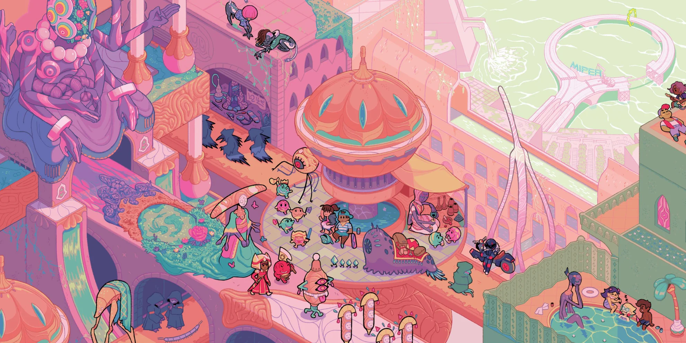

Eine geschäftige, exotische Utopie-Stadt. Die Einheimischen handeln Oliven und Gewürze im Forum, diskutieren das Multiversum in uralten Tempeln und versuchen, die Geister zu ignorieren.
Thennis Spar zum ersten Mal zu besuchen fühlt sich an, als reiste man gleichzeitig in die ferne Vergangenheit und die ferne Zukunft. Auf dem überfüllten Marktplatz findet man genauso leicht einen Karren voll frischem Gemüse wie einen Haufen geborgener Alien-Technik. Ein uralter Obelisk, aus dem lebenden Fels gehauen, ragt über allem auf, und an seiner Spitze taucht ein Hartportal aus Prismatia die ganze Stadt in ewiges Licht der goldenen Stunde.
Da die meisten Welten nur verlassene Ruinen und ungezähmte Wildnis sind, lernen Nulls Slugger hier oft zum ersten Mal die größere multiversale Kultur kennen. Diese Stadt kann einer Crew, die sich einen Namen machen will, viele Türen und ganz reale Portale öffnen – legt euch nur nicht mit den Arboristen an!

CIVaktive Zivilisation